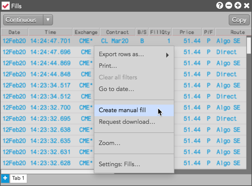
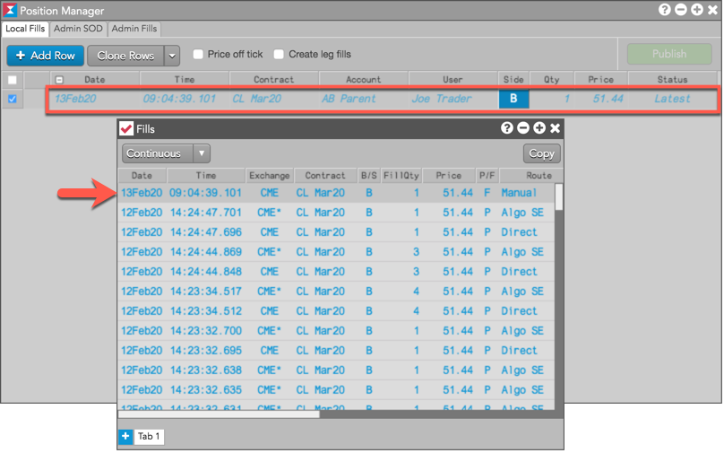

You can create manual fills from the Fills widget by selecting the Create Manual Fill right-click menu option for one or more fills selected in the widget.

When you click Create Manual Fill, the Position Manager widget opens with a new manual fill row seeded with the same parameters as the selected fill (e.g., contract, account, quantity, Buy/Sell direction, etc.). When you click Publish in Position Manager, the manual fill appears in the Fills widget.

Note: If you click "Create Manual Fill" as a user with administrator permissions, the Admin Fills tab is automatically selected in Position Manager. Otherwise, the Local Fills tab is selected by default.
For more details about using Position Manager, refer to Creating a Manual Fill.